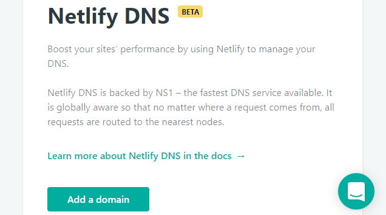

2017/12/20に，ブログの公開をGitHub PagesからNetlifyに移行した件を書きました．ただ，その時の方法だと，最初にアップしたサイトが特権的な扱いを受けて，後続のサイトと非対称な形になってしまいました．少し気になっていたところ，DNS zonesから再設定することで，非対称性を解消できました．
以下，順を追って説明したいと思います．次の前提で話を進めます．
- カスタムドメインとサイトをすでに登録していたので，すべて削除しました．
- お名前.comで
daizutabi.netを取得済です． - GitHub上の「ブログ」レポジトリと「Pythonパッケージの作り方」レポジトリを公開していきます．
（注）具体的な名前で説明したほうが分かりやすいと思いそのまま書いています．ドメイン名やレポジトリ名は適宜置き換えを行ってください．
1. DNS zonesの設定
NetlifyにGitHubアカウントを使ってログインします．

左上のAll teamsからdaizutabiを選択します．

メニューからDNS zonesをクリックします．

Add a domainをクリックします．

Domainにdaizutabi.netを入力して，Create DNS zoneをクリックします．

Add new recordをクリックします．
上のように入力して，Saveをクリックします．つづけて，Add new recordをクリックして，次にように入力して，Saveをクリックします．
- Type: CNAME
- Hostname: iroha.daizutabi.net
- Value: www.netlify.com
Continueをクリックします．Update your domain's nameserversと表示されて，ネームサーバー一覧が表示されるので，これをお名前.comの自ドメインのネームサーバーに登録します．Doneをクリックして，DNS zonesの設定を終えます．
2. Siteの設定
daizutabiのメニューに戻ります．
Sitesをクリックしたあと，New site from Gitを選びます．
GitHubを選びます．
レポジトリ一覧が表示されるので，「ブログ」用のレポジトリdaizutabi/blogを選びます．
サイトの設定を入力していきます．blogレポジトリは，Pelicanを使っているのでPublish directoryにoutputを入力します．それ以外はデフォルトのままです．Deploy siteをクリックします．しばらくすると，サイトが自動で生成されます．
Domain settingsをクリックします．ページ中ほどのAdd Custom domainをクリックします．表示されたダイアログで，blog.daizutabi.netと入力します．
「Pythonパッケージの作り方」レポジトリについても同様です．ただし，こちらはMkDocsを使っているのでPublish directoryにはsiteを入力し，URLはiroha.daizutabi.netとします．他は同じです．
この記事は2017年12月28日 (木)に更新されました．